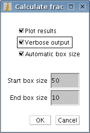

SDBC plugin documentation
Version 1.0, 2006-02-05, Per Henden. Expect more details to follow.
Theory of operation
The SDBC plugin is a direct implementation of the SDBC algorithm.
This algorithm estimates fractal dimension on maps or topographic surfaces, i.e. images
where the value of each coordinate specifies the height of that coordinate,
f(x,y) = z.
The SDBC algorithm is described in
"Two algorithms to estimate fractal dimension
of gray level images" by Wen-Shiung Chen et.al.
Published in "Optical Engineering", Vol 42. No. 8, August 2003.
SDBC is basically an improvement to the classical box-counting method of estimating the fractal dimension of an object.
The improvement lies in that the boxes are not locked to a grid in the z-direction, but moved up and down to find the lowest number of boxes needed.
Usage
Copy the .class file into the imagej plugin folder to use the plugin.
Open an image, select plugins and SDBC.
The following dialog box will show:

- Plot results - specifies whether or not the measurements that are the basis for the estimate should be shown.
- Verbose output - specifies whether or not information on progress and results of box counting should be shown.
- Automatic box size - If enabled, the starting and ending box sizes will be automatically selected. They are selected in the following way:
Start box size is largest side of image divided by 2, End box size is 2. The original SDBC algorithm uses these box sizes.
- Start box size - If automatic box size is disabled, this will be the start box size of the box counting procedure, i.e. the largest box size used.
- End box size - If automatic box size is disabled, this will be the end box size of the box counting procedure, i.e. the smallest box size used.
By looking at the plot you may notice that the regression line deviates much from the points associated with the largest or smallest box sizes. If so, you can improve
estimates by excluding these box sizes. This is one of the drawbacks of using box counting to estimate fractal dimension - you have to select which box
sizes to use and what is a good choice of box sizes depends on the data.